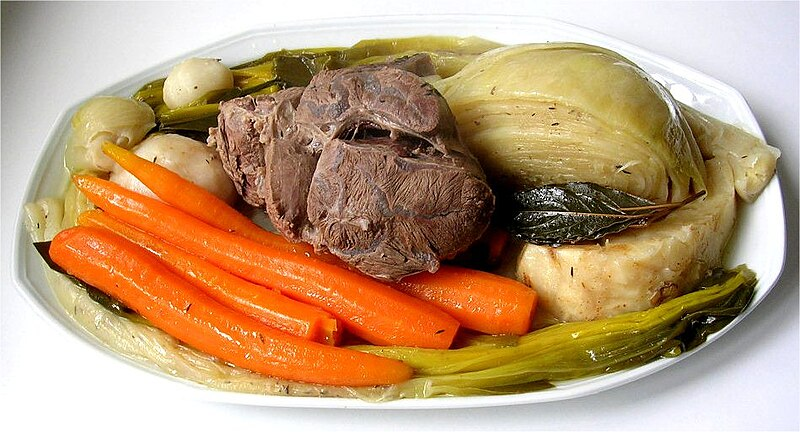

Home|
Recipes
Pot-au-feu

Image source: WIKIMEDIA COMMONS
Description
Pot-au-feu is the essence of traditional French comfort food—a rustic stew of tender beef, root vegetables, and fragrant herbs, all gently simmered to perfection.
The rich broth soothes the soul, while the melt-in-your-mouth meat and colorful vegetables turn each spoonful into a taste of home. It’s simple, hearty, and deeply satisfying—a true taste of France in every bite.
Sit back, serve it hot, and let the flavors bring everyone to the table.
Ingredients
- 4 carrots
- 3 leeks
- 1 yellow onion
- Coarse salt
- 1 kg stew meat (with bone, if possible)
- 800 g potatoes
- 3 turnips or 1 stalk of celery
- 1 medium cabbage
- 1 head of garlic (unpeeled)
- 1 bouquet garni (a bundle of herbs like thyme, bay leaf, and parsley)
Steps
- Trim excess fat from the meat. Place it in a large pot with cold water, the bouquet garni, peeled onion, unpeeled garlic, and a generous pinch of coarse salt.
- Cook under pressure for 30 minutes.
- Meanwhile, peel and prepare the vegetables. After 30 minutes, release the steam, then add all the vegetables except the potatoes.
- Cook under pressure for another 5 minutes.
- Release the steam again, add the potatoes, and cook under pressure for a final 10 minutes.
- Serve hot with a bit of broth and crusty bread on the side. Bon appétit!